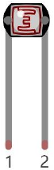

ESP32-S3 board
The brain that runs your uploaded sketch.
ESP32-S3 Lab · Day 17 of 30
Every knob and button so far has been something you operated. Today a photoresistor and one fixed resistor turn the room's light into a voltage, the ADC turns that voltage into a number, and a threshold turns that number into a decision — set the light level that counts as dark, and the lamp switches itself.
TSK-DAY17-NIGHTLAMP
Hand this to an agent so it can pull the lesson packet and coach you step by step.
01 First, know the pieces
Seven things, one of them new. Tap Define on any part you haven't met — the answer opens as a field note you can read and dismiss without losing your place.
The brain that runs your uploaded sketch.

Spreads the pins into rows you can reach and label.

Today's sensor — its resistance follows the light falling on it.

The lamp itself — it only works one way round.

Sits in series with the LED to keep the current gentle.
Pairs with the photoresistor to turn light into a readable voltage.

Temporary, solder-free connections.
02 Make the physical circuit
The official Freenove diagram is your chart — schematic on top, the same circuit built on a breadboard below. Click it to enlarge. Two small circuits share the board today: the divider that reads the light, and the LED that answers it.
Mind the LED's legs. The LED only lights one way round — long leg toward GPIO 14 through the 220 Ω resistor, short leg to ground. The photoresistor has no polarity, so either leg can face either way. Unplug USB before you move any wire.
03 One action at a time
This is the main path — you can finish the day without opening a single field note. Tap each step as you go to keep your place.
Seat the ESP32-S3 on the GPIO extension board and keep USB unplugged while you wire.
Place the photoresistor on the breadboard — its two legs are interchangeable.
Run the 10 kΩ resistor from the 3.3V rail to one leg of the photoresistor, and take the photoresistor's other leg to GND.
Wire the point where the resistor and the photoresistor meet — the divider's midpoint — to GPIO 1.
Place the LED so its long leg (+) heads toward GPIO 14 and its short leg (−) toward ground.
Put the 220 Ω resistor in series between GPIO 14 and the LED's long leg.
Compare every wire to the chart before you plug in USB.
Open Sketch_11.1_NightLamp.ino in Arduino IDE and upload it.
Cup a hand over the photoresistor, then light it with a phone torch — watch the LED answer each move.
04 Read just enough code
The whole sketch is five working lines. One line in setup attaches the LED pin to a PWM channel; the loop reads the light and maps it straight onto the lamp's brightness. Switch to MicroPython if you'd rather see the same idea in Python — the wiring never changes.
#define PIN_ANALOG_IN 1
#define PIN_LED 14
#define CHAN 0
#define LIGHT_MIN 372
#define LIGHT_MAX 2048
void setup() {
ledcAttachChannel(PIN_LED, 1000, 12, CHAN);
}
void loop() {
int adcVal = analogRead(PIN_ANALOG_IN); //read adc
int pwmVal = map(constrain(adcVal, LIGHT_MIN, LIGHT_MAX), LIGHT_MIN, LIGHT_MAX, 0, 4095); // adcVal re-map to pwmVal
ledcWrite(PIN_LED, pwmVal); // set the pulse width.
delay(10);
}analogRead(PIN_ANALOG_IN)Reads the divider's midpoint voltage on GPIO 1 as a number from 0 to 4095. constrain(adcVal, LIGHT_MIN, LIGHT_MAX)Fences the reading inside the 372–2048 window before map stretches that window across the full brightness scale — this is where constrain earns its keep. ledcWrite(PIN_LED, pwmVal)Sets the lamp's brightness on GPIO 14 — 0 is dark and 4095 is full. Optional side path · same circuit
pwm =PWM(Pin(14,Pin.OUT),1000)
adc=ADC(Pin(1))
adc.atten(ADC.ATTN_11DB)
adc.width(ADC.WIDTH_12BIT)
adcValue=adc.read()
pwmValue=remap(adcValue,0,4095,0,1023)
pwm.duty(pwmValue)
print(adcValue,pwmValue)adc.atten(ADC.ATTN_11DB)Widens the ADC's range so it can read the divider all the way up to 3.3V.remap(adcValue,0,4095,0,1023)Stretches the full 12-bit reading onto MicroPython's 10-bit duty scale — the same map idea with different numbers.Same pins, same wiring. This version maps the whole 0–4095 range straight onto a 10-bit duty, so its response curve is gentler than Arduino's constrained window — the idea is identical. Run it in Thonny if MicroPython is set up; otherwise skip it — it should never block the Arduino-first path.
05 Understand, don't memorise
Days 13 and 15 built the first half — a photoresistor in a voltage divider becomes a number, and that number can drive an output. The sketch you upload today uses it as a dimmer, so the lamp follows the room's light up and down. The move that makes a device feel like it decides for itself comes next: holding that same reading against a threshold and switching on which side of the line it lands. That is what the challenge builds.
The photoresistor's resistance follows the light on it — bright light lowers it, darkness raises it.
Paired with the fixed 10 kΩ resistor it forms a voltage divider, so the midpoint voltage on GPIO 1 rises and falls with the light. The ADC reads that voltage as a value from 0 to 4095 — the reading you met on Day 13.
Pick one number as the boundary. On one side the room is bright and the lamp stays off; on the other it is dark and the lamp comes on. One comparison turns a live reading into a clean on-or-off decision. Which reading counts as dark depends on how the divider sits, so you measure it — cover the sensor and note the value.
Right at the line the reading jitters across the boundary and the lamp chatters on and off. A small gap between the on-point and the off-point, or averaging a few readings before you compare, holds it steady.
dark room → reading crosses the threshold → lamp on
A real reading wobbles by a few counts even in steady light. When the room sits right at the threshold, that wobble crosses the line many times a second and the lamp flickers. Give the lamp two lines instead — turn on past a darker number, turn off past a brighter one — and the gap between them is wider than the wobble, so the lamp commits to one state. Averaging several readings before you compare smooths the same jitter.
A pin reads voltage, and a photoresistor on its own offers only a changing resistance. Pair it with a fixed resistor and the two split 3.3V at their midpoint in proportion to their resistances, so the midpoint voltage tracks the light — and that midpoint is the value the ADC turns into your reading and the threshold judges.
06 Know it worked
Nothing prints to the screen today — the proof is the lamp answering your hand.
Which direction is which follows how the divider sits on your board — the proof is the slide itself, steady and repeatable each time you cover and light the sensor.
07 Make the idea yours
Your room's dark and bright readings belong to your room, your board, and where the sensor sits — so you measure them, then pick a threshold between them and let the lamp switch on the boundary you chose. It fits inside today's time.
Add Serial.begin(115200); to setup and Serial.println(adcVal); to the loop, re-upload, and open Serial Monitor. Cup your hand fully over the photoresistor and note the dark reading, then light it with a phone torch and note the bright reading. Those two numbers are your room's real range, and they tell you which reading means dark on your board.
Pick a number partway between your dark and bright readings. Replace the map line with a comparison — on the dark side of your threshold call ledcWrite(PIN_LED, 4095) to light the lamp, on the bright side call ledcWrite(PIN_LED, 0) to switch it off. If it flickers right at the boundary, move the on-point and off-point a little apart so one small wobble can't cross both.
08 Learn it with a hand on the tiller
Every lesson ships with a code and a machine-readable packet, so an agent can guide you with full context.
TSK-DAY17-NIGHTLAMP
How the agent should behave: guide one physical connection at a time and wait for confirmation, keep the build primary, then teach the day's real idea — turning the ADC reading into a decision with a threshold — and have the learner measure their own room's dark and bright values before choosing one.